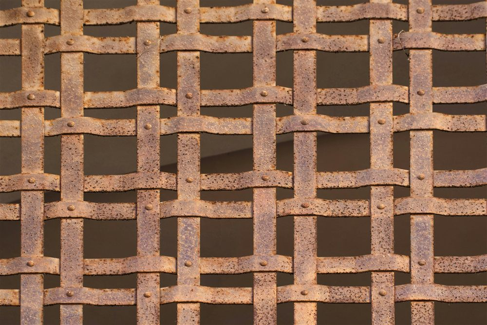
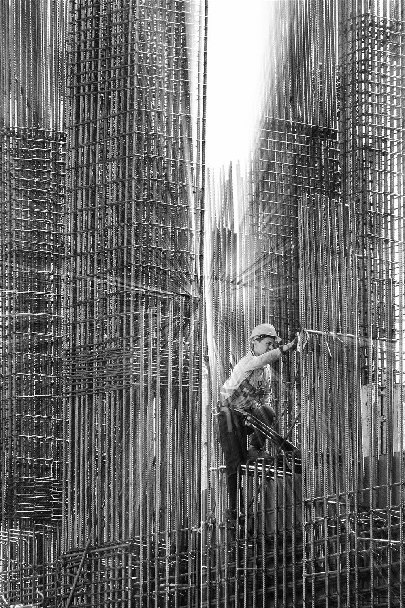

Le ferraillage, une étape technique souvent sous-estimée
Le plan d'armatures fixe précisément le diamètre, le nombre, l'espacement et la position de chaque barre d'acier. Mais ce plan n'est qu'une intention tant qu'il n'est pas fidèlement transposé sur le chantier. Entre la nomenclature établie au bureau d'études et le ferraillage réellement ligaturé dans le coffrage, plusieurs écarts peuvent apparaître : un oubli de cale, un espacement resserré à la va-vite, une barre remplacée par une autre disponible sous la main. Pris isolément, ces écarts semblent mineurs. Additionnés, ils changent le comportement réel de l'ouvrage par rapport à ce qui a été calculé selon l'Eurocode 2 (NF EN 1992).
Le béton armé fonctionne parce que l'acier et le béton travaillent ensemble, chacun à sa place. Un ferraillage mal exécuté rompt cette collaboration, même si la quantité totale d'acier posée semble correcte.
Un ferraillage se contrôle avant le coulage, pas après. Une fois le béton coulé, les armatures sont invisibles. Toute erreur de mise en oeuvre non détectée reste figée dans l'ouvrage pour toute sa durée de vie. La vérification visuelle du ferraillage en place, avant la commande de béton, est le dernier filet de sécurité.
Erreur n°1 : le calage insuffisant ou absent
Les cales (en plastique, en béton ou en mortier) maintiennent les armatures à distance du coffrage pendant le coulage. Sans elles, ou en nombre insuffisant, les aciers reposent directement sur le fond ou les parois du coffrage sous leur propre poids et sous la pression du béton frais. Le résultat est un enrobage nul ou très inférieur à celui prévu, à certains endroits de l'élément.
Cette erreur est parmi les plus fréquentes sur les chantiers, car les cales sont de petites pièces facilement oubliées, mal réparties, ou de mauvaise qualité (cales fissurées qui cèdent sous le poids d'une nappe d'armatures). Un enrobage localement nul expose l'acier à l'air et à l'humidité dès la mise en service, et amorce une corrosion précoce.
- Cales insuffisantes en nombre : les armatures fléchissent entre deux points d'appui et touchent le coffrage.
- Cales de mauvaise nature : cales en bois ou en acier au contact direct du parement, qui laissent une trace de rouille ou pourrissent.
- Cales absentes sur les faces latérales d'un voile ou d'un poteau, souvent moins surveillées que la face inférieure.

Erreur n°2 : espacements et diamètres non respectés
Le plan d'armatures fixe un espacement précis entre barres (par exemple des HA10 tous les 15 cm) et un diamètre défini pour chaque position. Sur le chantier, il arrive que ces valeurs soient approchées plutôt que respectées : espacement resserré par manque de temps, ou au contraire élargi pour finir un panneau avec le nombre de barres disponibles. Un diamètre inférieur peut aussi être substitué à un diamètre supérieur si le stock du bon calibre est épuisé au moment du ferraillage.
Ces substitutions modifient directement la section d'acier réellement en place, donc la capacité résistante de l'élément, sans que cela se voie une fois le béton coulé. Toute substitution de diamètre ou d'espacement doit être validée par le bureau d'études avant exécution, jamais décidée seule sur le chantier.
Le respect des espacements conditionne aussi l'enrobage : un espacement trop faible entre barres ou entre lits gêne le passage du béton et favorise les nids de cailloux (zones où le béton n'a pas correctement enrobé les aciers, laissant des vides).
Erreur n°3 : recouvrements et ancrages trop courts
Une barre d'armature ne fait jamais toute la longueur d'un élément : les barres sont raccordées entre elles par recouvrement (chevauchement sur une longueur définie) ou ancrées dans un appui. Cette longueur de recouvrement, calculée selon l'Eurocode 2 en fonction du diamètre, de la nuance d'acier et de la classe de béton, garantit que l'effort se transmet intégralement d'une barre à l'autre.
Réduire cette longueur pour économiser de l'acier ou faciliter la pose est une erreur fréquente et grave : le recouvrement devient un point faible où l'effort ne se transmet plus complètement, ce qui peut provoquer une fissuration localisée voire une perte de capacité portante. Le décalage des recouvrements d'une barre à l'autre (pour éviter de cumuler tous les joints à la même section) est une autre disposition souvent négligée sur chantier.
Un ordre de grandeur, pas une règle universelle. Selon l'Eurocode 2, la longueur d'ancrage de référence est de l'ordre de 40 à 50 fois le diamètre de la barre pour un acier HA courant en traction, et le recouvrement peut être majoré au-delà selon la proportion de barres jointées à la même section. Seul le calcul du bureau d'études, propre à chaque élément, fixe la valeur exacte à respecter.
Erreur n°4 : aciers souillés, oxydés ou endommagés avant coulage
Un ferraillage correctement positionné peut encore poser problème si les aciers eux-mêmes sont dans un état inadapté au moment du coulage. Trois situations reviennent régulièrement :
- Aciers souillés : terre, huile de décoffrage ou laitance de béton déposées sur les barres avant leur mise en place, qui nuisent à l'adhérence entre acier et béton.
- Corrosion superficielle avancée : une légère rouille de surface n'est pas problématique et améliore même l'adhérence, mais des aciers stockés longtemps à l'air libre et fortement piqués de rouille perdent en section utile.
- Cadres et étriers mal ligaturés : un ligaturage insuffisant laisse le cage d'armatures se déformer pendant le coulage, sous le passage des ouvriers ou la vibration du béton, et déplace les aciers hors de leur position prévue.
Ces situations sont d'autant plus fréquentes que le ferraillage est préparé à l'avance et stocké plusieurs semaines sur le chantier avant sa mise en place définitive.

Erreurs fréquentes, conséquences et bonnes pratiques
Le tableau ci-dessous résume les erreurs les plus courantes observées sur chantier, leur conséquence principale et la bonne pratique à appliquer.
| Erreur constatée | Conséquence principale | Bonne pratique |
|---|---|---|
| Calage absent ou insuffisant | Enrobage nul ou réduit localement, corrosion précoce | Une cale tous les 50 à 80 cm environ, sur toutes les faces exposées |
| Espacement resserré ou élargi | Section d'acier réelle différente du calcul, nids de cailloux | Respecter l'espacement du plan, valider toute adaptation avec le BE |
| Diamètre substitué | Capacité résistante modifiée sans validation | Aucune substitution sans accord écrit du bureau d'études |
| Recouvrement raccourci | Transmission d'effort incomplète entre barres | Respecter la longueur calculée, décaler les joints entre barres |
| Aciers souillés ou corrodés | Adhérence acier-béton dégradée | Nettoyer les barres avant pose, limiter le stockage prolongé au sol |
| Ligaturage insuffisant | Déplacement de la cage pendant le coulage | Ligaturer chaque croisement, contrôler la rigidité de la cage avant coulage |
Comment prévenir ces erreurs avant le coulage
Aucune de ces erreurs n'est une fatalité : elles se préviennent par un contrôle organisé, en amont du coulage. Trois réflexes limitent l'essentiel du risque :
- Un plan d'armatures lisible et complet, avec nomenclature détaillée, pour que l'équipe de ferraillage travaille à partir d'un document sans ambiguïté.
- Une visite de contrôle avant coulage, qui vérifie le calage, les espacements, les recouvrements et la propreté des aciers directement dans le coffrage.
- Une validation formelle de toute adaptation proposée par l'entreprise (diamètre indisponible, espacement à ajuster autour d'une réservation) auprès du bureau d'études, avant et non après exécution.
Ce contrôle est généralement mené conjointement par le bureau d'études, l'entreprise et, selon les projets, le bureau de contrôle. Il constitue la dernière étape où une correction reste possible sans démolition.
Un doute sur un ferraillage avant coulage ? MH Structure établit vos plans d'armatures conformes à l'Eurocode 2 et vous indique, à titre de conseil, les points à vérifier avant de bétonner. Devis gratuit sous 48h.
Comment MH Structure vous accompagne
MH Structure établit vos plans d'armatures et vous donne, à titre de conseil, les repères pour une mise en oeuvre conforme :
- Plans d'armatures détaillés avec nomenclature et cadres de façonnage, selon l'Eurocode 2.
- Points de vigilance à vérifier avant coulage (calage, espacements, recouvrements, propreté des aciers), transmis à titre d'information.
- Validation technique de toute adaptation proposée par l'entreprise en cours de chantier.
- Étude et échanges à distance, partout en France et dans les DOM-TOM.
Photos : JANG RACHEL, antonio massara, Mesut Yalçın — via Unsplash